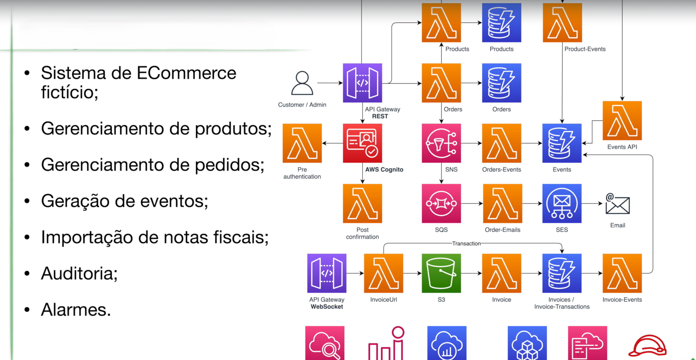
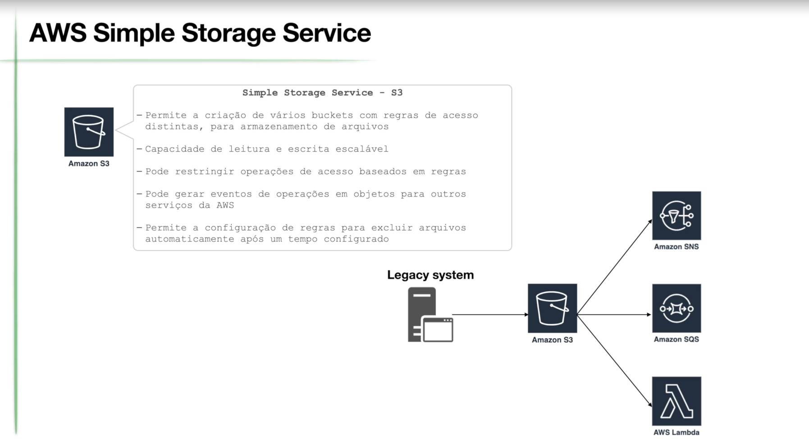
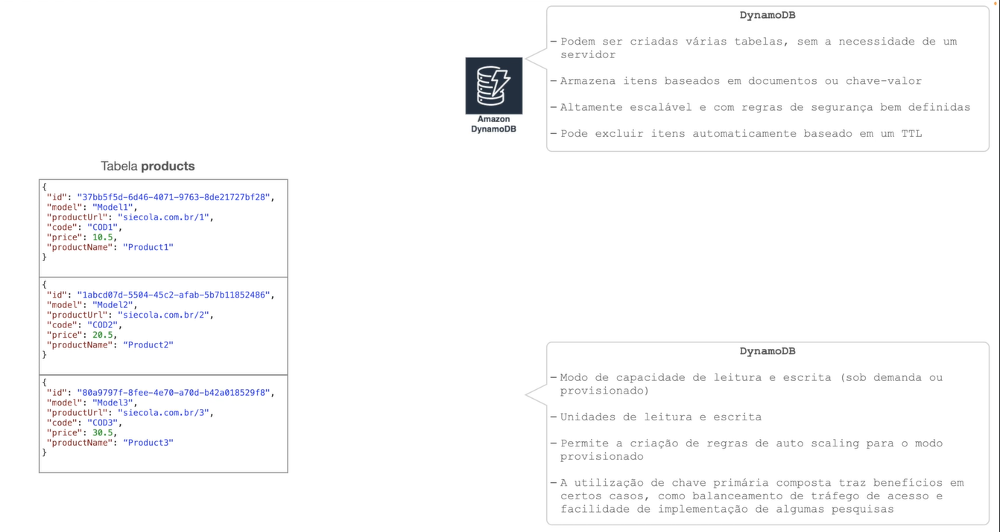
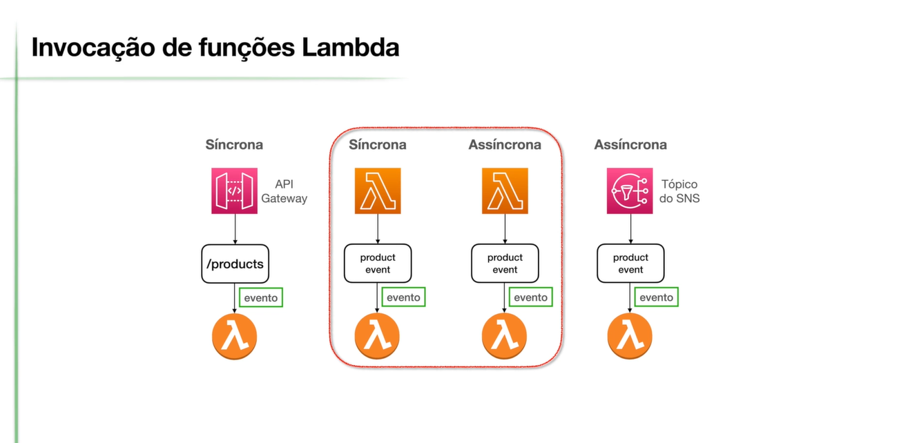
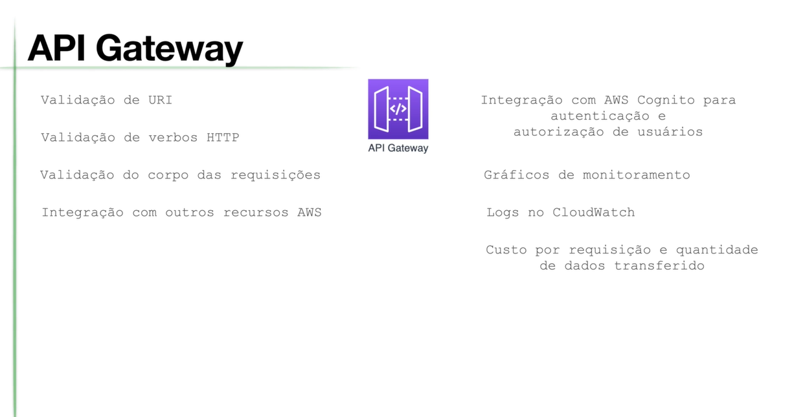

Arquitetura
A arquitetura é projetada para ser escalável, confiável e segura, utilizando diversos serviços da AWS para garantir uma experiência de compra online excepcional.

Componentes
- Amazon S3 (Simple Storage Service): Armazena os arquivos estáticos da loja virtual, como HTML, CSS, JavaScript e imagens, além das notas fiscais em formato XML.

- Amazon DynamoDB: Banco de dados NoSQL altamente escalável e flexível, utilizado para armazenar informações sobre produtos, pedidos e clientes.

- AWS Lambda: Funções serverless que executam o código da aplicação, como processamento de pedidos, validação de dados, geração de relatórios, etc.

- Amazon API Gateway: Cria uma API RESTful que permite a interação com ecommerce a partir de aplicativos externos e da interface do usuário.



- Amazon Cognito: Serviço de gerenciamento de identidade que permite autenticar e autorizar usuários, além de gerenciar o cadastro e login de clientes.

- Amazon SNS (Simple Notification Service): Serviço de mensagens pub/sub que envia notificações por e-mail (SES) ou SMS para clientes e administradores da loja.

- Amazon SES (Simple Email Service): Serviço de envio de e-mails transacionais, usado para enviar notificações de pedidos, confirmações de cadastro, etc.

- AWS X-Ray: Serviço de rastreamento distribuído que ajuda a analisar e depurar solicitações à API Gateway e às funções Lambda.


- Amazon CloudWatch: Serviço de monitoramento que coleta logs e métricas dos serviços da AWS, permitindo acompanhar o desempenho da loja virtual e configurar alarmes.

- AWS CloudFormation: Serviço de infraestrutura como código (IaC) que permite provisionar e gerenciar os recursos da AWS de forma automatizada e repetível.


Fluxo de Trabalho
- O cliente acessa a loja virtual através de um navegador web.
- O CloudFront entrega os arquivos estáticos (HTML, CSS, JavaScript) armazenados no S3.
- O cliente interage com a loja virtual, enviando requisições à API Gateway.
- A API Gateway invoca as funções Lambda para processar as requisições.
- As funções Lambda acessam o DynamoDB para ler e gravar dados.
- As funções Lambda podem enviar notificações por e-mail (SES) ou SMS (SNS).
- O X-Ray rastreia as requisições e o CloudWatch monitora o desempenho da aplicação.
Benefícios da Arquitetura
-
Escalabilidade: A arquitetura é altamente escalável, pois os serviços da AWS podem ser dimensionados automaticamente para lidar com o aumento do tráfego e da demanda.
-
Confiabilidade: A redundância e a alta disponibilidade dos serviços da AWS garantem que a loja virtual esteja sempre disponível para os clientes.
-
Segurança: A autenticação de usuários, a criptografia de dados e o firewall de aplicação web (WAF) protegem a loja virtual contra ameaças de segurança.
-
Custo-benefício: A arquitetura serverless permite que você pague apenas pelos recursos que utilizar, reduzindo os custos operacionais.
Esta é uma visão geral da arquitetura desenvolvida na AWS para o nosso reskilling.